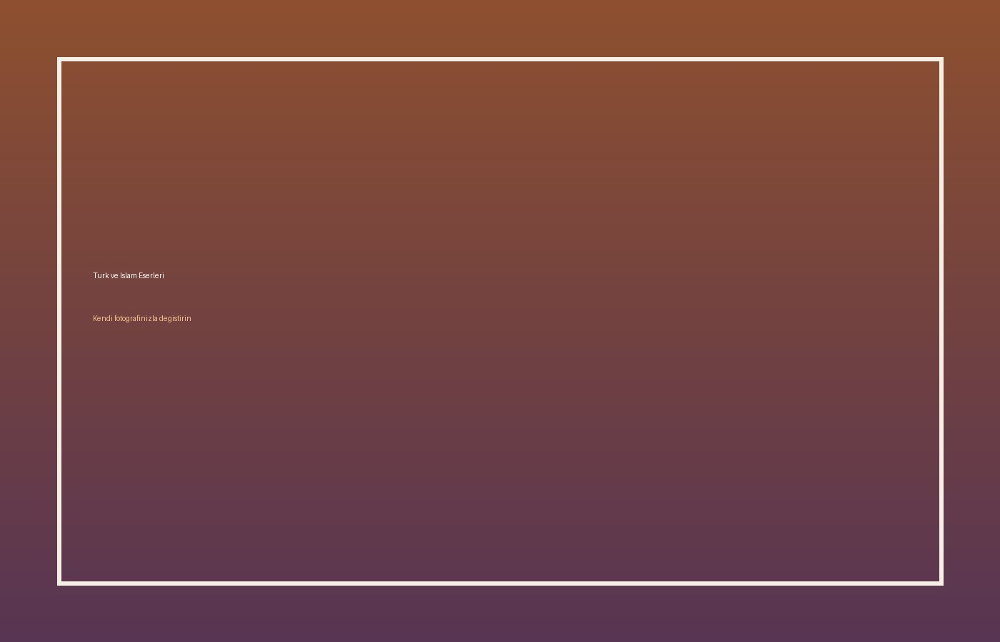

YAMA Museum Guide
Türk ve İslam Eserleri Müzesi
El yazmaları, halılar ve İslam sanatının Anadolu–Osmanlı estetik hafızası.

YAMA DNA
Bu sayfa zamanla kişisel fotoğraflar, kısa tarihsel anlatı, küçük bir efsane, üç dilli sesli rehber ve ziyaret notlarıyla genişletilecek.
Fotoğraf klasörü
Bu müzenin fotoğraflarını doğrudan bu klasöre ekleyin:
museums/turkey/turk-islam-eserleri/photo01.jpg
museums/turkey/turk-islam-eserleri/photo02.jpg
museums/turkey/turk-islam-eserleri/photo03.jpg